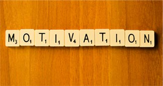
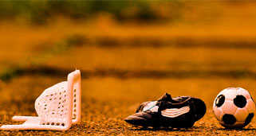
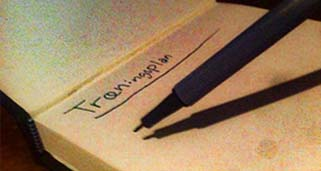

Gode tips til din Motivation
Det er ofte svært at holde motivationen til at holde sig i gang. Man har den måske i en kort periode, men den har det ofte med at dale efter et par uger. Vi vil her give dig nogle få gode hjælpemidler og metoder til, hvordan du kan holde dig selv motiveret til at begynde eller fastholde din træning.
Find en sport der passer dig
Træning skal være drevet af lyst. Så når du vælger en sport er det vigtigt at du spørger dig selv om hvad du selv har lyst til: Er du til holdsport, er du mere til individuel træning osv.
Spørg eventuelt en kammerat eller nogen du kender hvad de går til og hvad de synes er fedt ved den aktivitet de går til.
Planlægning
Skriv i din kalender nogle faste dage, f.eks. 2 gange om ugen og del dine planer med dine venner og familie. På den måde forpligter du dig selv og kan samtidig også finde noget opbakning hos din omgangskreds.
Find nogen at træne med
Det at træne sammen med nogen du kender kan være en stor fordel. Det gør at sporten ikke bare bliver en fysisk aktivitet, men noget socialt som man kan dele med hinanden.